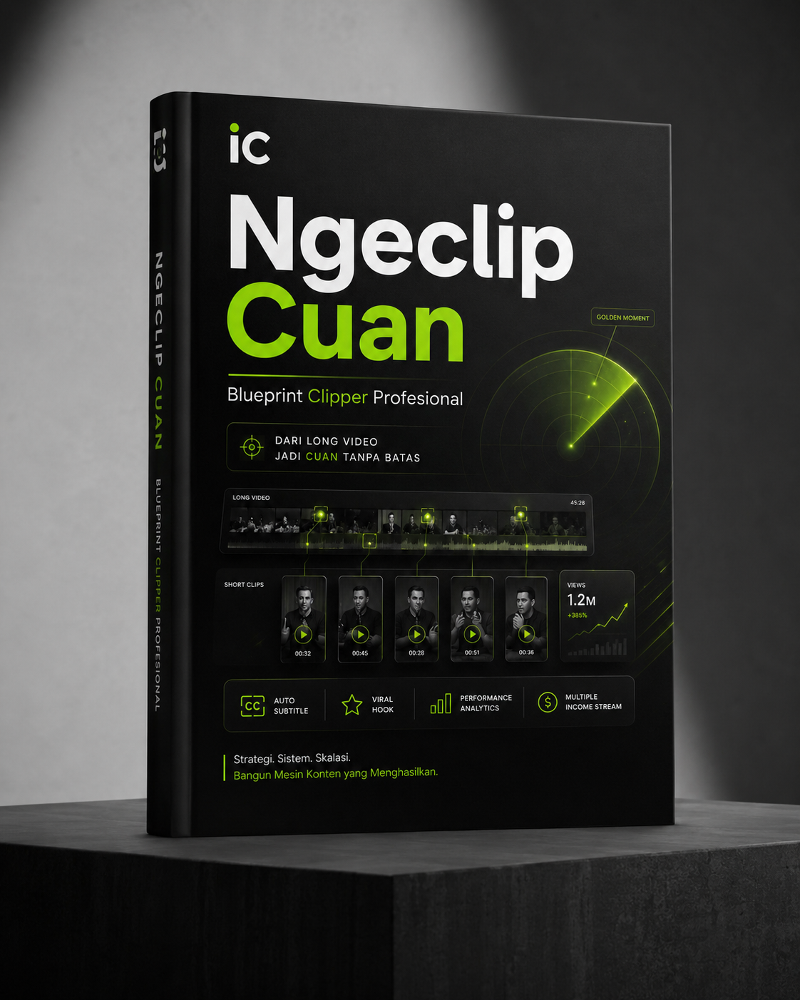

Di era gempuran konten digital saat ini, perhatian manusia adalah mata uang baru yang paling berharga. Rentang perhatian yang semakin pendek menciptakan sebuah profesi baru yang sangat krusial di balik layar: Clipper.
Banyak pemula mengira industri ini hanyalah soal menyalin dan menempel potongan video milik orang lain secara asal-asalan. Itu adalah kesalahan mindset terbesar. Sebagai seorang profesional, profesi clipper adalah seni tingkat tinggi dalam memanipulasi perhatian penonton. Tugas utama seorang clipper adalah mengekstrak momen 60 detik paling epik, lucu, atau emosional dari live streaming atau podcast berjam-jam, lalu menyajikannya dalam editan yang rapi untuk audiens yang kelaparan akan konten instan.
Peluang Masa Depan: 5-10 Tahun ke Depan
Apakah menjadi clipper masih menjanjikan di masa depan? Jawabannya: jauh lebih menjanjikan daripada hari ini. Konsumsi video pendek (short-form) berakselerasi secara eksponensial.
Ke depannya, industri clipping akan bertransformasi dari sekadar hobi sampingan menjadi sebuah model bisnis agensi media yang sangat dicari. Kreator papan atas, korporasi, hingga podcaster tidak lagi memiliki waktu untuk mengedit potongan klip mereka sendiri. Mereka sangat membutuhkan pasukan clipper independen yang andal untuk menjaga eksistensi dan brand awareness mereka di berbagai platform.
Siapa yang Akan Berhasil dan Gagal?
Persaingan akan semakin ketat, dan industri ini akan melakukan pembersihan massal.
- Karakteristik Clipper yang Sukses: Mereka yang akan bertahan dan menghasilkan pendapatan melimpah adalah clipper yang menguasai seni storytelling, optimalisasi metadata, dan benar-benar memahami psikologi penonton pada 3 detik pertama (hook).
- Karakteristik Clipper yang Gagal: Mereka yang dipastikan gulung tikar adalah clipper yang hanya mengandalkan AI generator otomatis tanpa sentuhan emosi manusia, memotong asal-asalan tanpa memedulikan konteks, dan cepat menyerah saat video pertamanya sepi penonton.
2 Jalur Karir: Clipper Mandiri vs Clipper Platform
Secara garis besar, ada dua jalan yang bisa diambil oleh seorang clipper.
Clipper Mandiri (Kreator Pribadi)
Ini adalah jalur di mana kamu menjadi clipper independen atau clipper resmi untuk kreator tertentu. Kamu membangun channel kamu sendiri dari nol di YouTube Shorts, TikTok, atau Instagram Reels, dan memonetisasinya melalui sistem iklan bawaan platform, affiliate, atau kerja sama langsung (revenue share) dengan kreator asli.
Clipper Platform
Jalur ini dilakukan dengan bergabung ke web atau ekosistem campaign tertentu yang akan membayar keringatmu secara adil berdasarkan penayangan atau target views.
Bagi kamu yang ingin menjajaki jalur platform, berikut adalah rekomendasinya:
Persenjataan Clipper (Hardware & Software)
Kabar baiknya: kamu tidak butuh PC atau laptop mahal untuk mulai. Modal utama seorang clipper cuma HP dan kuota internet. Bahkan HP kentang pun sudah cukup untuk memotong, memberi subtitle, dan meng-upload klip pertamamu.
- HP (senjata utama): RAM 3–4GB sudah bisa jalan. Yang penting punya ruang penyimpanan cukup untuk menampung video mentah sebelum diedit.
- Aplikasi editing: CapCut (versi HP) sudah lebih dari cukup — ringan, gratis, antarmukanya intuitif, dan punya fitur Auto Captions yang sangat menghemat waktu.
- Koneksi internet: Untuk mengunduh materi mentah dan meng-upload hasil klip.
Kalau nanti kamu sudah serius dan ingin naik skala (mengedit banyak klip sekaligus / batching), barulah upgrade ke laptop/PC jadi masuk akal — bukan wajib di awal. Spesifikasi yang nyaman: prosesor Intel Core i3 / Ryzen 3, RAM 8GB (16GB lebih lega), dan pakai SSD agar proses editing lebih mulus. Tapi ingat, itu opsi upgrade, bukan syarat masuk. Banyak clipper sukses justru mulai murni dari HP.
⚠️ Peringatan Penting tentang Tools AI:
Di luar sana banyak tools AI yang menawarkan "potong video otomatis langsung jadi". Sangat tidak disarankan menggunakan tools pemotong AI otomatis tersebut. Seperti yang dibahas sebelumnya, mengandalkan AI generator otomatis sepenuhnya tanpa kurasi emosi manusia adalah penyebab utama banyak clipper gagal. Untuk memahami lebih dalam mengapa ini berbahaya bagi channel kamu, baca artikel Sisi Gelap AI dalam Dunia Clipping.
Core Skill Clipper: Ilmu Konten & Editing
Menjadi clipper yang menghasilkan cuan bukanlah tentang seberapa banyak kamu memotong, melainkan seberapa jago kamu menguasai Retensi. Retensi adalah raja mutlak di mata algoritma.
Inti dari pekerjaan ini bertumpu pada dua hal:
- Kemampuan Menemukan Golden Moment: Mencari bahan bakar (uranium) berupa momen paling meledak, lucu, emosional, atau truth bomb yang tersembunyi di dalam video berdurasi jam-jaman.
- Teknik Editing Tingkat Dewa: Bagaimana kamu meracik hook 3 detik pertama untuk menghancurkan scroll barrier, memotong ruang kosong (dead air) tanpa ampun, dan menggunakan subtitle raksasa serta efek suara (SFX) untuk mengendalikan psikologi penonton.
Untuk mempelajari secara mendalam blueprint rahasia, struktur kerja (batching), taktik mem-bypass algoritma, hingga etika hak cipta, kamu wajib membaca panduan komprehensifnya. Dapatkan ilmu daging selengkapnya melalui e-book Ngeclip Cuan: Blueprint Clipper Profesional.

Contek Sistemnya. Skip Coba-cobanya.
Blueprint lengkap riset momen emas, hook 3 detik, editing anti-copyright, sampai monetisasi views jadi cuan — dirangkum di satu tempat.
Mulai Pelajari Ngeclip Cuan 👉Terhubung dengan Ikhlas
Masih bingung mau mulai dari mana? Sapa langsung atau ikuti update terbarunya di sini: